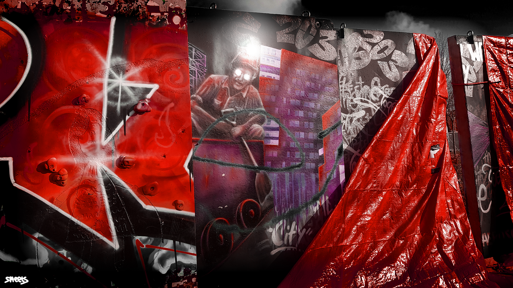
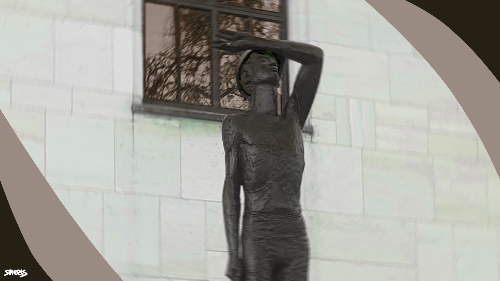
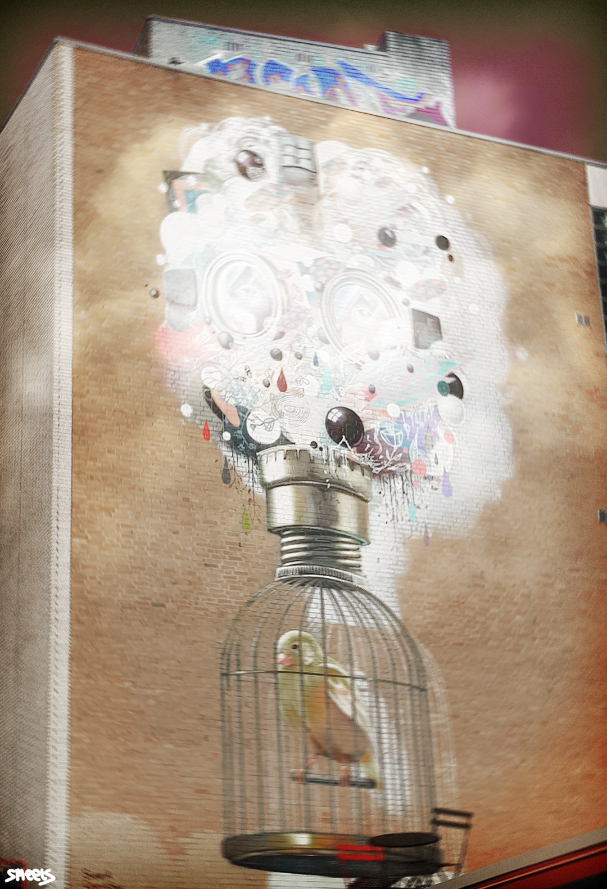

Digital Art
Van deze foto is nog niets bekend, aangezien het een gloednieuw kunstwerk is dat nog niet af was gemaakt.
Dit is een 3 meter hoog beeld dat een mijnwerker uitbeeld die zijn ogen beschermt van het licht van de buitenwereld nadat hij bovenkomt van een dag werken in de mijnen, gemaakt door, François M.G.H. een beeldhouwer en tekenaar.
Dit werk is gemaakt in 2013, en beeld uit hoe de "koelpieten" mijners waarschuwde voor gevaarlijke gassen, het refereerd aan een gasmasker. Dit werk heeft in 2016 een award gewonnen voor Dutch Street Art in de categorie wonderwall